Identifying the Neural Signature of the Approximate Number System via Multilevel Nonlinear Regression of Single-Trial EEG
Jessica Ann Diaz
Birmingham City University
Mark Andrews
Nottingham Trent University
The Approximate Number System
The Approximate Number System (ANS) is the capacity to represent and compare numerical quantities without counting or symbolic number (Dehaene 1997; Feigenson, Dehaene, and Spelke 2004).
- Present from infancy, and shared with non-human animals
- Operates over large, uncounted sets, in parallel with exact, symbolic number
- Precision is ratio-dependent: discriminating 10 vs. 20 is easy, 18 vs. 20 is harder, which is the same as 180 vs. 200, etc.
The standard experimental paradigm: which of two dot arrays is more numerous?
The Mental Number Line
A widely held account: a set of size \(n\) is represented internally as a Gaussian random variable centred on \(n\), with standard deviation proportional to \(n\).
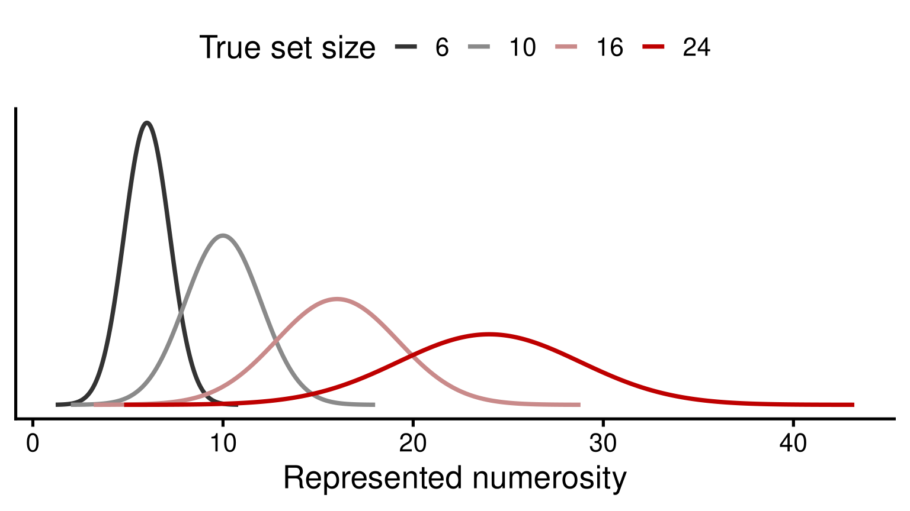
Larger, more overlapping distributions for larger \(n\): this is Weber’s law applied to number, and it is the basis of ratio-dependent discrimination.
Why the ANS Matters
- ANS acuity (the precision of this internal representation) correlates with symbolic mathematical achievement, across childhood and into adulthood (Halberda, Mazzocco, and Feigenson 2008)
- This holds even controlling for general intelligence and other cognitive factors
- Raises the possibility that atypical ANS function contributes to atypical mathematical development, including developmental dyscalculia
This motivates asking not just whether the ANS predicts maths ability, but what, mechanistically, differs in the individuals for whom it does not.
Neural Signatures of the ANS: What Is Known
Numerosity-evoked potentials in posterior/parietal EEG show a consistent sequence of components, each with a distinct functional profile:
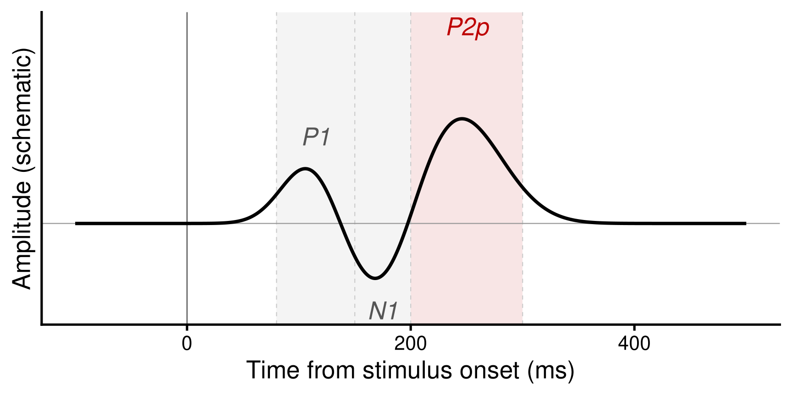
Timings and functional dissociation from the numerosity-adaptation literature, notably Grasso et al. (2022).
P1: An Early, Stimulus-Driven Response
P1, ~80-150ms, posterior positivity.
- Modulated by real differences in dot count between conditions
- Unaffected by an illusion that changes perceived numerosity without changing the physical display (Grasso et al. 2022)
- Reflects the physical stimulus, not (yet) the perceptual estimate
N1: Individuating Small Arrays
N1, ~150-200ms, a negative-going deflection between P1 and P2p.
- Within the subitizing range (1-3 items), modulated by absolute number specifically, and tied to attending to and individuating locations, not an abstract sense of quantity (Hyde and Spelke 2009)
- Outside that range, it behaves more like P1: modulated by physical numerosity, unaffected by the perceptual illusion, “virtually overlapped” across conditions that differ only in perceived number (Grasso et al. 2022; Fornaciai and Park 2017)
- An earlier, more stimulus-driven stage than P2p
P2p: The Candidate ANS Signature
P2p, ~200-250ms, “P2, parietal” (to distinguish it from the unrelated centro-frontal P2/P200).
- Tracks perceived, not physical, numerosity
- Shrinks under the same adaptation illusion that leaves P1 and N1 unchanged, and that shrinkage correlates with participants’ own behavioural underestimation (Grasso et al. 2022)
- Modulated by numerical distance/ratio, specifically over large numerical ranges (Libertus, Woldorff, and Brannon 2007; Park et al. 2016)
The leading candidate for the neural signature of ANS processing specifically, as opposed to low-level visual processing of the display.
Open Questions
- How much do P1/N1/P2p vary, trial to trial and person to person?
- Individual differences in P2p, and their relationship to behavioural ANS acuity, are largely unexplored
- How does the waveform change continuously as stimulus properties (numerical ratio, array density) vary?
- The developmental trajectory of these specific components is not well characterised
- Whether, and how, differences in this neural signature relate to atypical numerical development remains an open question
Motivation: Why Multilevel Nonlinear Models?
The standard analysis pipeline discards exactly the information most of the open questions above need:
- Trial-to-trial variability, averaged away before it can be modelled
- Subject-to-subject variability in waveform shape, not just amplitude
- Continuous relationships between stimulus properties and the waveform, forced into discrete condition contrasts
Model the single-trial voltage waveform itself, at every electrode, as a smooth random function of time, varying systematically with stimulus properties and probabilistically across trials and participants.
From Linear Regression to Basis Functions
An normal linear model of time \(t\): \(y_t = w_0 + w_1 \cdot t + \epsilon_t\).
A nonlinear function can be modelled as a linear sum of \(K\) basis functions of time, \(\phi_1(t), \dots, \phi_K(t)\): \[
y_t = w_0 + \sum_{k=1}^{K} w_k\, \phi_k(t) + \epsilon_t.
\]
- The \(\phi_k\) are deterministic functions (e.g., Gaussian radial basis functions) with hyperparameters
- The weights \(w_k\) are regression coefficients estimated from data
- This is exactly the same trick as polynomial or spline regression: nonlinear in time, linear in the weights
From Random Slopes to Random Functions
A linear mixed effects (multilevel linear) model gives each subject their own intercept and slope: \[
\begin{aligned}
y_{ij} &= \beta_{0j} + \beta_{1j} x_{ij} + \epsilon_{ij}.\\
&= (b_0 + u_{0j}) + (b_1 + u_{1j}) x_{ij} + \epsilon_{ij}.
\end{aligned}
\]
Generalising this to the basis-function model above: give every weight \(w_k\) its own subject deviation, and its own trial deviation: \[
w_k(\text{subject}, \text{trial}) = w_k^{(0)} + u_{k,\,\text{subject}} + v_{k,\,\text{trial}}.
\]
A subject or trial gets its own random function, a whole waveform shape deviating from the population-average waveform.
The Behavioural Task
All participants completed a two-alternative forced-choice task, PsychoPy-based, EEG-synchronised via trigger codes at stimulus onset and response.
- Two dot arrays shown side by side; judge, via a left or right key press, which array is more numerous
- The display remains on screen until the participant responds, or a per-trial timeout elapses
- Followed by an inter-stimulus interval before the next trial
Task Stimuli
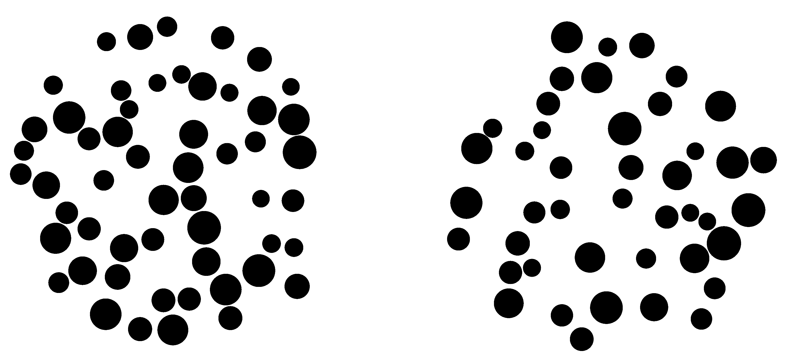
Which side has more?
EEG Recording and Preprocessing
- 64-channel BioSemi ActiveTwo recording, downsampled to 1024 Hz
- Independent Component Analysis, with automated component labelling (ICLabel), to remove ocular, muscle, and other non-neural artefacts
- 1-30 Hz band-pass filter; re-referenced to the average of all channels
- Epoched -200 to 1000ms relative to stimulus onset, baseline-corrected
- AutoReject applied per channel per trial, to repair or flag residual artefacts
A fixed, reproducible pipeline: every participant’s data passes through exactly the same sequence of steps.
Behavioural Results: Accuracy
Dots task, adults, 48 participants, 9600 trials.
- Overall accuracy: 84%
- Across participants: from 73.5% to 91.5% (SD 4.2 points)
- Within a participant, accuracy varies systematically with how different the two arrays are, not randomly: see the next two slides
Average Accuracy by Dot Count Difference
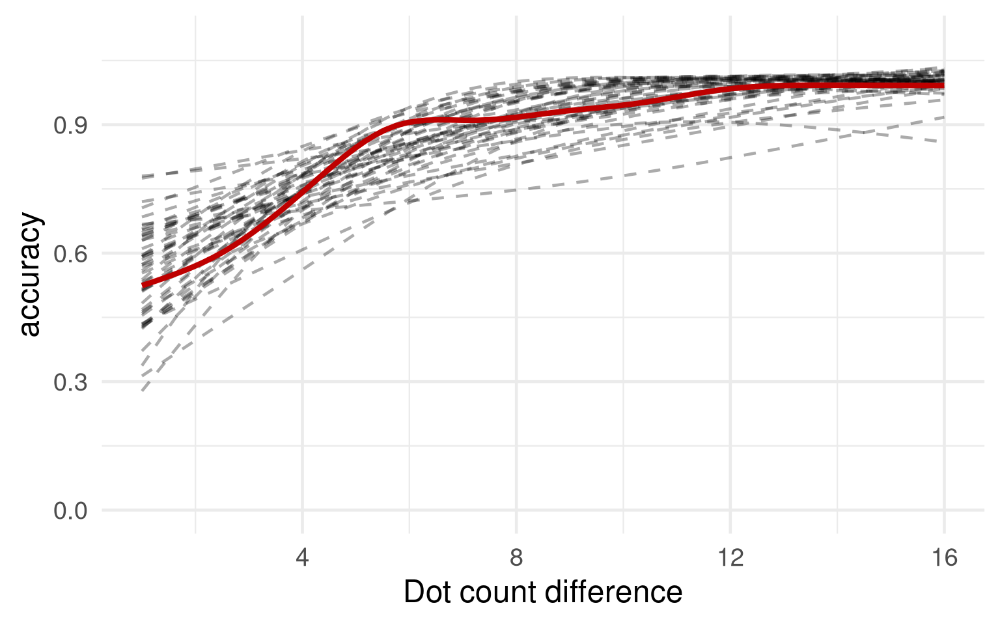
Average Accuracy by Dot Count Ratio
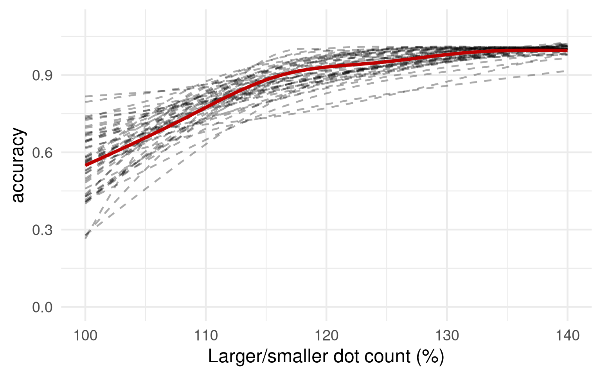
Behavioural Results: Reaction Time
Accurate trials only.
- Overall: mean 0.95s, median 0.79s (right-skewed, as RT distributions usually are)
- Across participants: from 0.59s to 2.31s (SD 0.32s)
- Within a participant, trial-to-trial variability is real too: mean within-participant SD 0.37s, comparable in size to the between-participant spread
Average Reaction Time by Dot Count Difference
Accurate trials only.
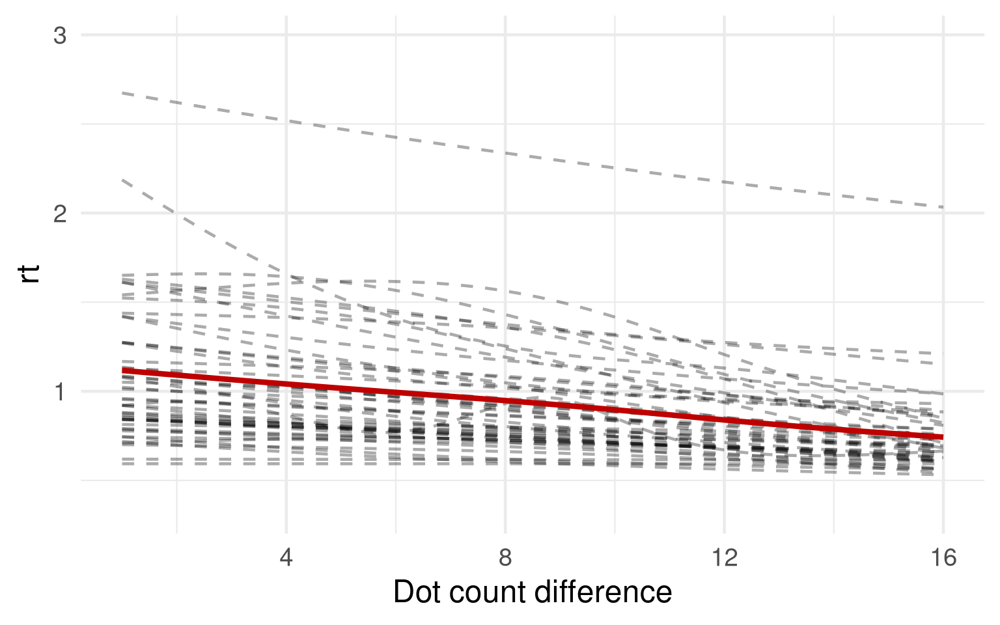
Average Reaction Time by Dot Count Ratio
Accurate trials only.
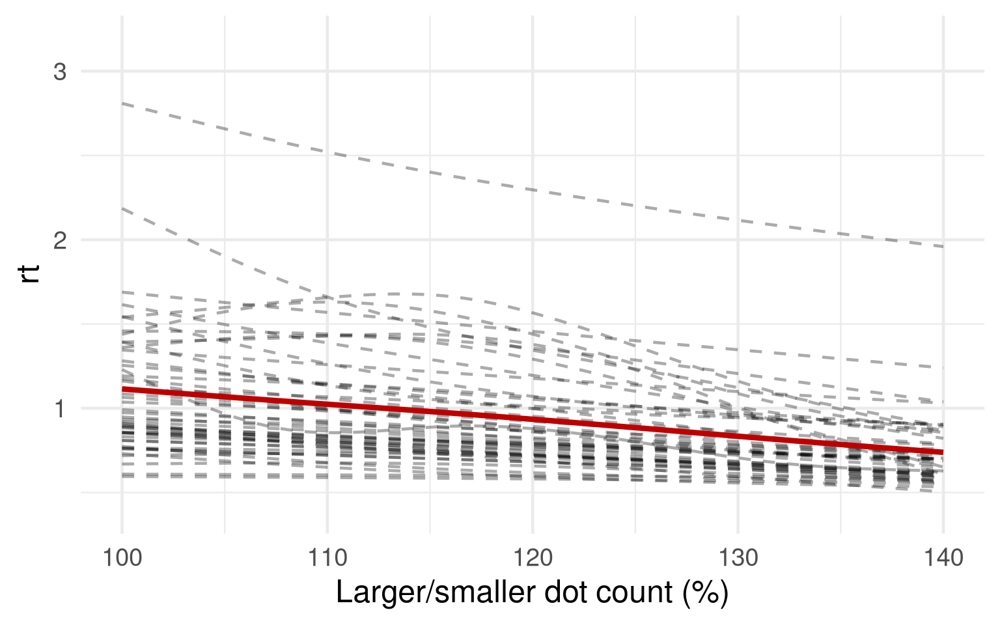
Speed-Accuracy Trade-off
One point per participant: mean accuracy against mean reaction time (all trials).
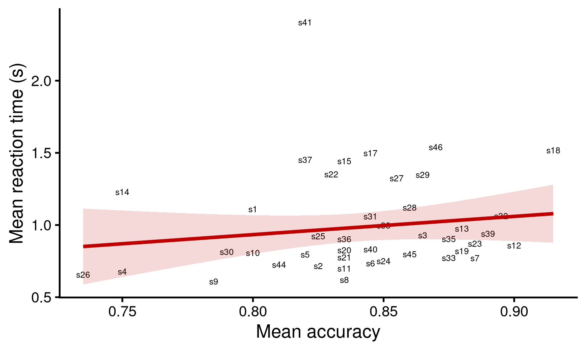
Correlation: r = 0.16, weak, but in the direction a speed-accuracy trade-off predicts: slower participants tend to be slightly more accurate.
Grand-Average ERPs by Electrode
Grand average (all subjects, all trials) at a representative subset of electrodes, not all 64: anterior (AF) at top, central (C) in the middle, parieto-occipital (PO/P) at the bottom.
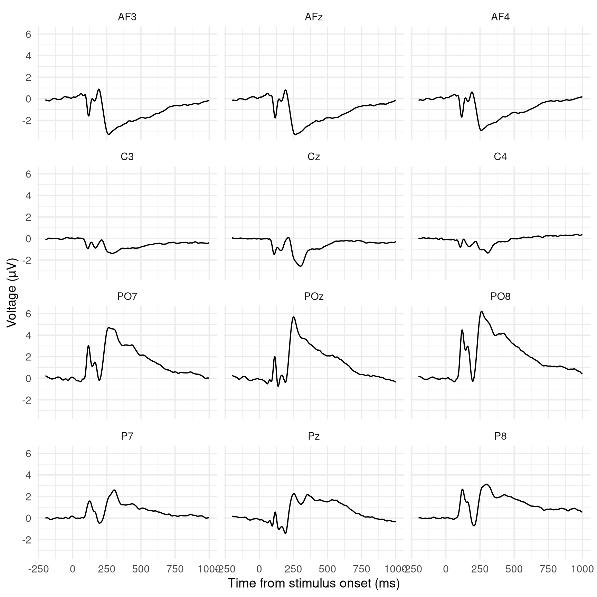
Parieto-Occipital Electrodes
Black: each participant’s own average waveform. Red: the grand average across participants.
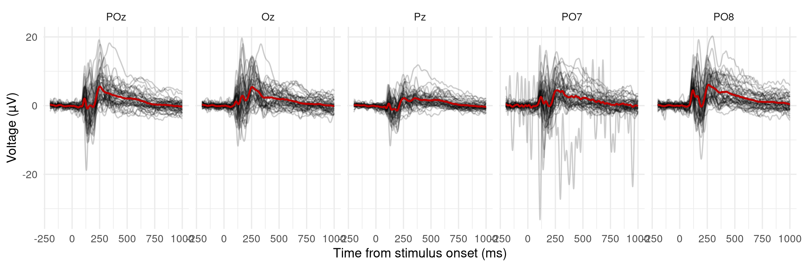
Inter-Trial Variability, One Participant
Black: every individual trial for one participant (s47). Red: that participant’s own average waveform.
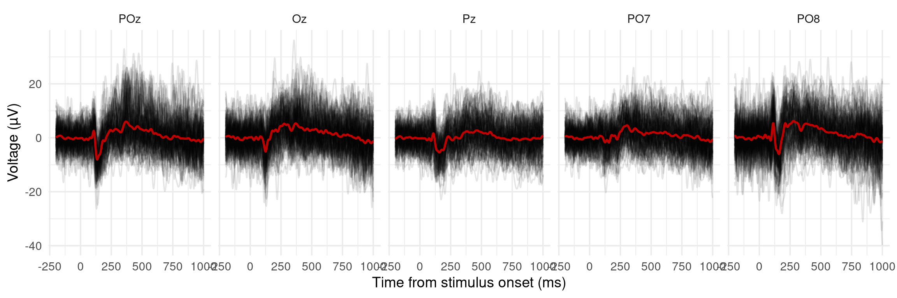
Multilevel Model: Variability Across Subjects
A first fit of the multilevel model at POz: each participant’s own fitted average waveform (black) around the fitted population average (red).
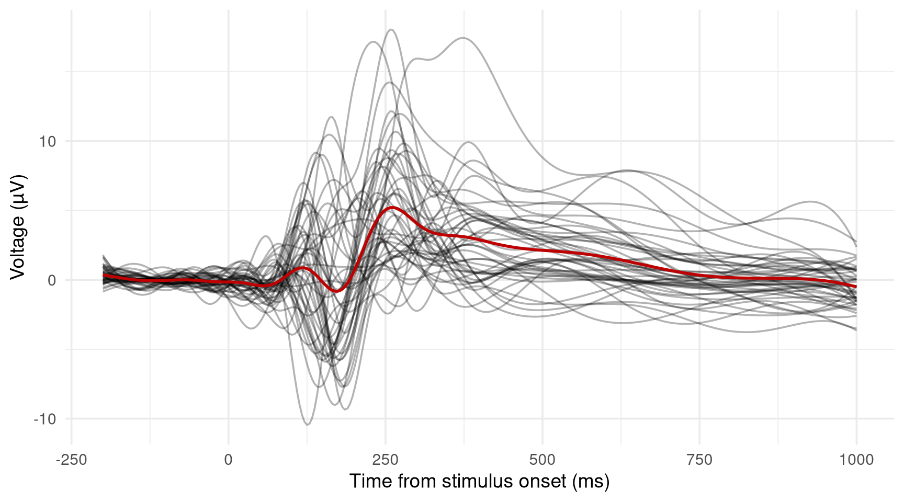
Multilevel Model: Variability Across Trials
The same kind of model, now for one participant (s47): every individual trial’s fitted curve (black) around that participant’s own fitted average (red).
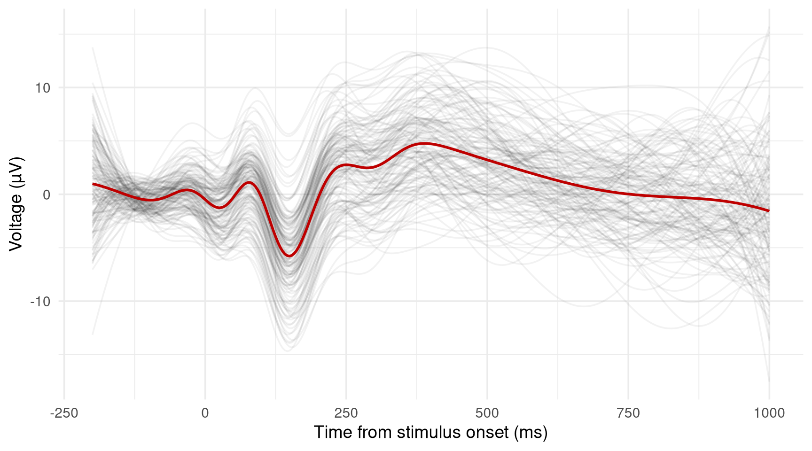
Multilevel Model: Subjects and Trials Together
Both sources of variability in one model: participant s47’s individual trials (black) around their own fitted average (red).
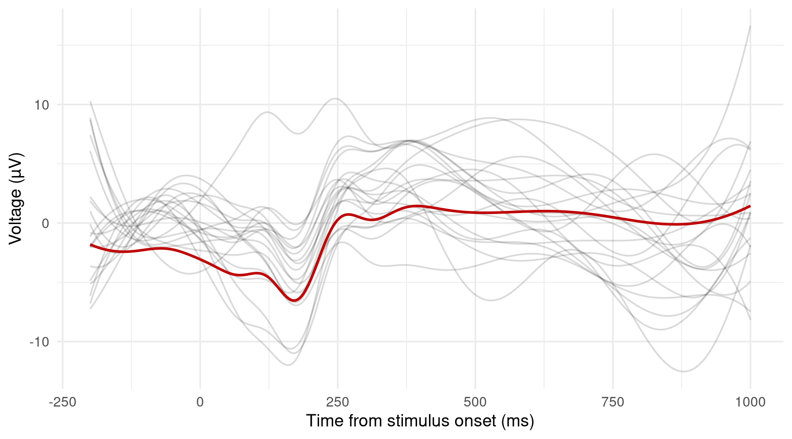
Conclusion
- Multilevel nonlinear modelling keeps what standard averaged-ERP analysis throws away: trial-to-trial variability, subject-level waveform shape, continuous stimulus effects
- That is exactly what the open questions raised earlier need: individual differences in P2p, continuous effects of ratio and density, developmental trajectories, atypical development
- What has been shown today is a proof of concept for the method itself, not yet answers to those questions
- Current work: a flexible yet efficient fully Bayesian implementation in Stan